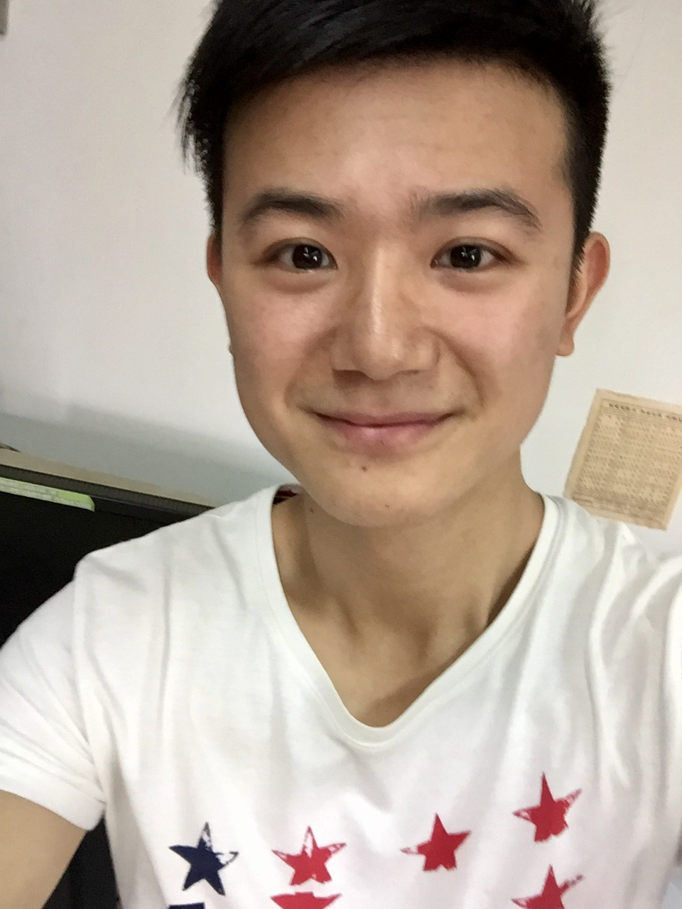

About Me
I am a PhD student at the University of California San Diego. My advisor is Prof. Tajana Rosing. Before that I was a master student at Zhejiang University.
Contact: yug185 (AT) eng (DOT) ucsd (DOT) edu

Research
My research interests include: machine learning and deep learning. My goal is to design efficient machine learning algorithms for practical applications.
Publication
2020
Improved Schemes for Episodic Memory based Lifelong Learning Algorithm
Yunhui Guo*, Mingrui Liu*, Tianbao Yang, Tajana Rosing. (*: equal contribution)
A Broader Study of Cross-Domain Few-Shot Learning
Yunhui Guo, Noel C. Codella, Leonid Karlinsky, James V. Codella, John R. Smith, Kate Saenko, Tajana Rosing, Rogerio Feris
ECCV 2020
AdaFilter: Adaptive Filter Fine-tuning for Deep Transfer Learning
Yunhui Guo, Yandong Li, Liqiang Wang, Tajana Rosing
AAAI 2020
2019
SpotTune: Transfer Learning through Adaptive Fine-tuning
Yunhui Guo, Honghui Shi, Abhishek Kumar, Kristen Grauman, Tajana Rosing, Rogério Schmidt Feris
CVPR 2019
Depthwise Convolution is All You Need for Learning Multiple Visual Domains.
Yunhui Guo*, Yandong Li*, Liqiang Wang, Tajana Rosing
*Equal Contribution
AAAI 2019
Pushing Down Machine Learning Inference to the Edge in Heterogeneous Internet of Things Applications
Anthony Thomas, Yunhui Guo, Yeseong Kim, Baris Aksanli, Arun Kumar, Tajana S Rosing
ICNSC 2019
2018
A Survey on Methods and Theories of Quantized Neural Networks
Yunhui Guo
2017
Understanding Users’ Budgets for Recommendation with Hierarchical Poisson Factorization
Yunhui Guo, Congfu Xu, Hanzhang Song, Xin Wang
IJCAI 2017
Incorporating Collaborative Ranking Algorithm with Weighted Recursive Autoencoder for Item Recommendation
Hanzhang Song, Yunhui Guo, Congfu Xu,
AAAI workshop 2017
2016
Collaborative Expert Recommendation for Community-Based Question Answering
Congfu Xu, Xin Wang, Yunhui Guo
ECML/PKDD 2016
LBMF: Log-Bilinear Matrix Factorization for Recommender Systems
Yunhui Guo, Xin Wang, Congfu Xu
PAKDD 2016
Constrained Preference Embedding for Item Recommendation
Xin Wang, CongFu Xu, Yunhui Guo, Hui Qian
IJCAI 2016
2015
CroRank: Cross Domain Personalized Transfer Ranking for Collaborative Filtering
Yunhui Guo, Xin Wang, Congfu Xu
ICDM workshop 2015
Recommendation Algorithms for Optimizing Hit Rate, User Satisfaction and Website Revenue
Xin Wang, Yunhui Guo, Congfu Xu
IJCAI 2015